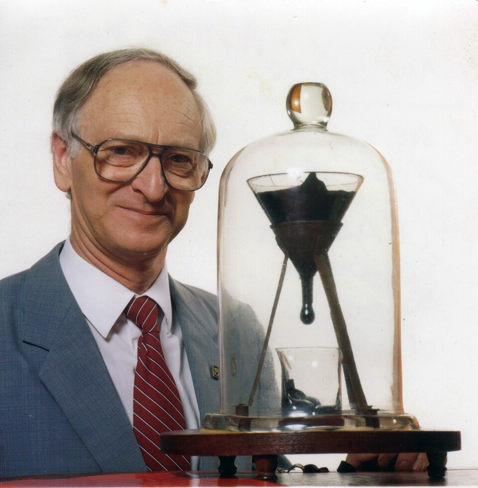

La materia que no resiste el corte: por qué el agua, el aire y la miel fluyen, y ninguno conserva su forma
Abrí la canilla y el agua sale; inclinás un frasco de miel y la miel termina saliendo, aunque tarde. Empujás de costado un bloque de madera apoyado en la mesa y se deforma un poquito, pero no fluye. Esa diferencia es la que define a un fluido. Como resume el libro University Physics de OpenStax, los líquidos y los gases se consideran fluidos porque ceden ante las fuerzas de corte, mientras que los sólidos las resisten [1]. Una fuerza de corte es la que se aplica en forma tangencial a una superficie, como cuando se arrastra la palma de la mano sobre la mesa.
La definición tiene una consecuencia importante: desde el punto de vista de la mecánica, un líquido y un gas son lo mismo. Los dos fluyen, y la mecánica de fluidos los describe con las mismas leyes, distinguiéndolos solo cuando se comportan distinto [1].
En un sólido, los átomos o las moléculas están muy cerca unos de otros y unidos por fuerzas intensas. Aunque un sólido no es incompresible, hace falta una fuerza grande para cambiarle la forma, y además resiste las fuerzas de corte [1].
En un líquido, las moléculas están casi tan juntas como en un sólido, pero con muchos menos vínculos: no quedan fijas en su lugar y pueden deslizarse unas sobre otras y cambiar de vecinas. Por eso un líquido tiene un volumen definido pero adopta la forma del recipiente, se deforma con facilidad y no recupera su forma cuando la fuerza desaparece. Como las moléculas están muy juntas, en cambio, resiste la compresión: cambiarle el volumen requiere fuerzas enormes [1].
En un gas, las moléculas están separadas por distancias grandes y las fuerzas entre ellas son muy débiles, salvo cuando chocan. Un gas no tiene forma ni volumen propios: ocupa todo el recipiente, se comprime con relativa facilidad y, si el recipiente está abierto, se escapa [1]. Hay además un cuarto estado, el plasma, que aparece a temperaturas muy altas, cuando los átomos se separan en cargas eléctricas; sus propiedades son muy diferentes por las fuerzas eléctricas entre esas cargas [1].
La tribuna de la cancha: pensá en una tribuna llena. Si cada persona está atada a su butaca, un empujón produce, como mucho, un pequeño balanceo: eso se parece a un sólido. Si todos están de pie, apretados pero libres de moverse, un empujón hace que la gente se reacomode y no vuelva a su lugar: así se comporta un líquido. Si están dispersos en un campo abierto, se dispersan todavía más: así se comporta un gas. Son las mismas personas; lo que cambia es cuán atadas están a sus vecinas.
A escala molecular, un gas es un enjambre de partículas que chocan sin parar. El valor de la constante de Loschmidt de CODATA indica cuántas son: a 0 °C y 100 kPa, un gas ideal tiene unas 2,65 × 1025 moléculas por metro cúbico, es decir, unas 2,65 × 1019 en cada centímetro cúbico [3]. En un ejemplo de OpenStax, los átomos de argón a 0 °C y 1 atm tienen una velocidad cuadrática media de unos 413 m/s y chocan, en promedio, cada 1,76 × 10−10 s [2].
La distancia media que recorre una molécula entre dos choques se llama recorrido libre medio. Para un gas ideal formado por esferas de radio r, la teoría cinética da [2]:
El valor numérico es un cálculo propio con la fórmula y los datos de OpenStax [2]. Lo importante es la escala: unas decenas de nanómetros. Cualquier cañería, ala o vaso es enormemente más grande que eso, y por eso conviene olvidarse de las moléculas y tratar al fluido como un medio continuo, con una densidad, una presión, una temperatura y una velocidad definidas en cada punto. Esa simplificación, y los casos en que deja de valer, son el tema del artículo sobre la hipótesis del continuo.
La diferencia entre un líquido y un gas es menos tajante de lo que parece. Cada sustancia tiene un punto crítico: por encima de esa temperatura y de esa presión ya no hay una frontera entre las dos fases. Según la base de datos de propiedades de fluidos del NIST, el punto crítico del agua está en 373,946 °C y 22,064 MPa, y el del dióxido de carbono, en 30,98 °C y 7,377 MPa [4]. Por encima de esos valores, la sustancia es un fluido supercrítico. La historia de cómo se descubrió está en el artículo sobre las fluctuaciones críticas.
En el uso cotidiano, la diferencia que más importa es la compresibilidad. Con los datos del NIST, el agua a 20 °C pasa de 998,21 kg/m³ a presión atmosférica a 1002,7 kg/m³ a unos 10 MPa, casi cien atmósferas: su densidad cambia menos de medio por ciento [4]. Un gas, en cambio, cambia de volumen en proporción a la presión. Aun así, cuando un gas se mueve mucho más despacio que el sonido, sus cambios de densidad son pequeños y se lo puede tratar como incompresible; de eso trata el artículo sobre la compresibilidad.
La densidad ρ es la masa por unidad de volumen. A 20 °C y presión atmosférica, el agua tiene unos 998 kg/m³ y el nitrógeno, el gas principal del aire, unos 1,16 kg/m³ [4]. OpenStax señala que la densidad de los gases cambia mucho con la temperatura, mientras que la de los líquidos cambia poco, y por eso esta última suele tratarse como constante [1].
La presión p es la fuerza perpendicular por unidad de área. Como un fluido no soporta fuerzas de corte, en reposo solo puede empujar en forma perpendicular a cualquier superficie: la presión es un escalar, pero las fuerzas que produce siempre son perpendiculares a la pared [1]. Por eso el fondo de un recipiente sostiene todo el peso del líquido: las paredes verticales no pueden empujarlo hacia arriba [1].
La viscosidad μ mide la fricción interna del fluido: la resistencia de unas capas a deslizarse sobre otras [5]. Con los valores del NIST, la viscosidad del agua a 20 °C es unas 57 veces la del nitrógeno [4]. La viscosidad decide, junto con la velocidad y el tamaño del flujo, si el movimiento es ordenado o turbulento, una competencia que mide el número de Reynolds. Tiene su propio artículo: la viscosidad.
Se suele repetir que los vitrales medievales son más gruesos abajo porque el vidrio «fluye» lentamente durante siglos. El físico Edgar Zanotto estimó en 1998, con curvas de viscosidad de vidrios modernos y antiguos, cuánto tardaría el vidrio en deformarse a temperatura ambiente. Su conclusión es que el vidrio de las ventanas podría fluir a esa temperatura solo en tiempos increíblemente largos, que exceden los límites de la historia humana [6]. La diferencia de espesor no se explica por un flujo del vidrio.

Fluidos fuera de lo común: la definición de fluido alcanza a sustancias muy distintas del agua y el aire. Hay fluidos cuyo comportamiento depende de cuán rápido se los deforma, como la maicena con agua, que se tratan en los fluidos no newtonianos; y hay fluidos cuánticos, como el helio a muy baja temperatura, que se tratan en los superfluidos.
Definir qué es un fluido parece simple, pero la definición tiene alcance: cualquier sustancia que no puede sostener una fuerza de corte en reposo fluye, y se describe con las mismas herramientas. Por eso el mismo lenguaje sirve para el agua de una cañería, el aire que rodea un ala y el gas de una estrella. En los próximos artículos de esta sección se definen una por una las ideas que hacen falta para describir ese movimiento.
Pregunta para la comunidad: La pasta de dientes no sale del pomo hasta que lo apretás, pero después fluye. ¿Es un sólido, un líquido o algo intermedio? ¿Qué experimento simple harías en tu casa para decidirlo?